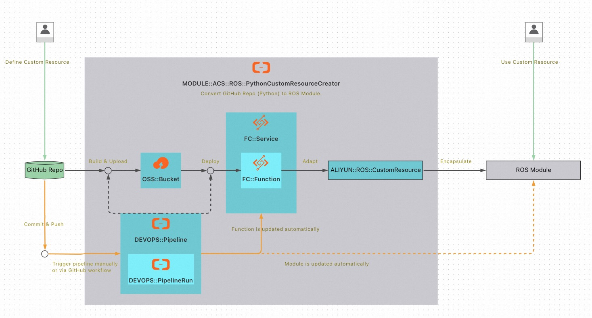

ROS自定义资源服务实例部署文档
概述
阿里云资源编排服务ROS（Resource Orchestration Service）可以帮助您简化云计算资源的管理。 遵循ROS定义的模板规范，您可以定义所需云计算资源的集合及资源间的依赖关系。 ROS可以自动完成所有资源的创建和配置，实现自动化部署和运维。
ROS不仅能够编排阿里云资源，还支持自定义资源。 使用自定义资源，您可以在模板中编写自定义配置逻辑。 当您创建、更新（如果您更改了自定义资源）或删除资源栈时，ROS会运行该逻辑。
ROS自定义资源服务可以把GitHub代码仓库（Python语言）构建和部署为ROS自定义资源，并输出ROS模块，方便后续使用。
本文向您介绍如何开通计算巢上的ROS自定义资源服务，以及部署流程和使用说明。
计费说明
ROS自定义资源服务在计算巢上的费用主要涉及：
- 对象存储OSS费用：构建好的代码包会放在OSS中。计费项涉及存储、流量和请求。
- 云效费用：会创建和执行流水线。基础版免费，但有限额。
- 函数计算：部署服务不产生此项费用，后续使用构建好的自定义资源或模块时会产生此项费用。计费项涉及函数调用、资源使用、公网出流量。首次开通前3个月有试用额度。
部署架构
如下图所示，计算巢会进行如下部署： - 创建OSS存储桶、函数计算服务和函数、云效流水线等资源。 - 执行云效流水线：下载GitHub代码、构建代码包、上传到OSS存储桶、部署到函数计算函数。 - 适配函数计算函数为ROS自定义资源，把ROS自定义资源封装为ROS模块，供后续使用。
GitHub代码更新后，可以手动触发或通过GitHub Workflow自动触发云效流水线。

RAM账号所需权限
ROS自定义资源服务需要对OSS、FC、RDC、ECS、RAM等服务的资源进行访问和创建操作，若您使用RAM用户创建服务实例，需要在创建服务实例前，对使用的RAM用户的账号添加相应资源的权限。添加RAM权限的详细操作，请参见为RAM用户授权。所需权限如下表所示。
| 权限策略名称 | 备注 |
|---|---|
| AliyunOSSFullAccess | 管理对象存储服务(OSS)权限 |
| AliyunFCFullAccess | 管理函数计算(FC)服务的权限 |
| AliyunRDCFullAccess | 管理云效(RDC)的权限 |
| AliyunECSReadOnlyAccess | 只读访问云服务器服务(ECS)的权限 |
| AliyunRAMFullAccess | 管理访问控制(RAM)的权限，即管理用户以及授权的权限。如果缺少角色AliyunFcDefaultRole、AliyunRDCDefaultRole则需要此权限创建角色。否则只需要AliyunRAMReadOnlyAccess权限。 |
| AliyunROSFullAccess | 管理资源编排服务(ROS)的权限 |
| AliyunComputeNestUserFullAccess | 管理计算巢服务（ComputeNest）的用户侧权限 |
部署流程
部署步骤
1.单击部署链接，进入服务实例部署界面，根据界面提示，填写参数完成部署。
2.在创建服务实例页，配置部署参数。


3.点击下一步：确认订单。
4.查看订单页，确保依赖检查全部正常，点击立即创建。
部署参数说明
| 参数组 | 参数项 | 示例 | 说明 |
|---|---|---|---|
| 服务实例名称 | ros-custom-resource-test | 实例的名称 | |
| 地域 | 华北2（北京） | 选中服务实例的地域，建议就近选中，以获取更好的网络延时。 | |
| 代码配置 | GitHub代码仓库地址 | https://github.com/aliyun-computenest/quickstart-ros-custom-resource.git | 建议从示例代码仓库fork。 |
| 代码配置 | GitHub代码仓库分支 | main | 要使用的分支。 |
| 代码配置 | Python版本 | python3.9 | Python版本。 |
| 云效配置 | 云效企业 | 6542ffd18281** | 下拉选择或者创建。 |
| 云效配置 | 云效GitHub服务连接 | re6dh9rs** | 下拉选择或者创建。 |
| 自定义资源配置 | 自定义资源类名 | Example1 | 使用示例代码仓库或其fork的代码仓库构建自定义资源时，需要指定具体要使用的自定义资源类名。自定义资源类具体指BaseCustomResource（位于common模块）的子类。在示例代码仓库中有2个自定义资源类，Example1和Example2（位于custom_resource.example模块）。指定模块使用的自定义资源类，后续使用模块时不可变。 |
| 自定义资源配置 | 模块名称 | MODULE::MyOrg::MyService::Example1 | 把自定义资源输出为ROS模块时，需要指定模块的名称。 |
| 自定义资源配置 | 资源动作执行超时时间 | 300 | 包括创建、更新和删除。 默认300秒。最小1秒，最大43200秒。 |
| 更多配置 | 名称前缀 | ros-custom-resource | 用于OSS存储桶、FC服务、云效服务连接、云效流水线。 |
| 更多配置 | OSS存储桶名称 | my-bucket | 用于存放构建好的自定义资源的代码包。若不设置则会自动创建。 |
| 更多配置 | 是否删除OSS存储桶 | true | 删除OSS存储桶会删除里面的所有文件。仅删除自动创建的OSS存储桶。 |
| 更多配置 | 流水线超时时间 | 5 | 云效流水线执行超时时间。单位分钟，默认5分钟。 |
验证结果
1.查看服务实例。服务实例创建成功后，部署时间大约需要2分钟。部署完成后，页面上可以看到对应的服务实例。点击服务实例，进入服务实例详情页面。
2.查看服务实例详情页面中的实例信息，点击ModuleURL处链接（红框处），进入模块详情页面。

3.查看模块详情页面，选择模板示例标签页，点击创建资源栈，进入创建资源栈页面。
4.在创建资源栈页面点击创建按钮，进入资源栈详情页面。

5.在资源栈详情页面，等待几秒钟，点击刷新按钮，等待资源栈创建完成。创建完成后，选择输出标签页。如果结果类似下图，则表明自定义资源模块部署成功，后续可以在其他模板中使用。

同步仓库代码到自定义资源模块
查看服务实例详情页面中的实例信息，点击PipelineURL处链接（蓝框处），可以访问云效流水线。
如果仓库中的代码更新了，您可以点击运行按钮运行流水线以更新自定义资源模块。

您也可以配置GitHub Workflow，在代码更新后触发云效流水线，实现自动进行同步。
自定义资源模块使用示例
查看服务实例详情页面中的实例信息，SampleTemplate处的模板为自定义资源模块的使用示例。您可以参考使用，也可以直接复制使用。